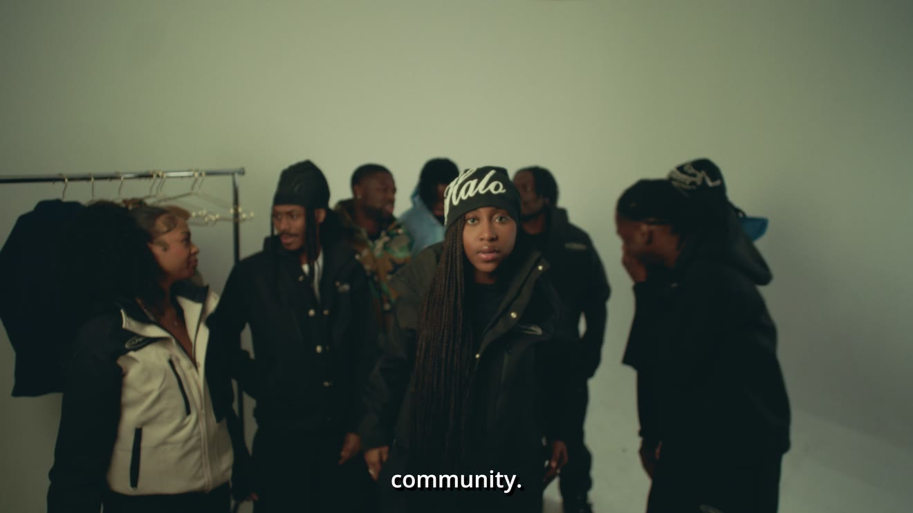
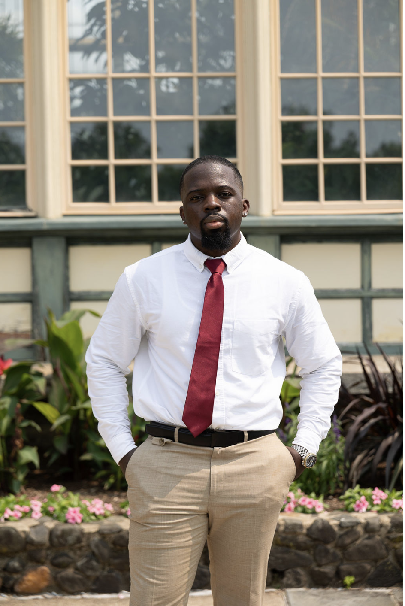

Oluwaseun Fadeyi / Selected work
Business
systems.
Digital content.
Creative
direction.
Digital campaigns.
I build Salesforce, automation, and reporting workflows. I also develop and edit digital campaigns for restaurants, events, and brands. This portfolio covers both sides of my work.
Digital-first campaign work for hospitality brands, community events, and cultural projects. The work ranges from short-form promotions to detailed commercial production, with editing shaped around the audience and platform.

01 / Explore by discipline
Two areas of work.
Different approaches.
Detailed systems case studies on one side. Selected content and campaign work on the other.
Systems & analytics
CRM implementation, BI reporting, attribution, data pipelines, and cross-platform automation.


Digital content & direction
Commercial content, event promotions, and social-first editing tailored to the audience and platform.
A closer look at the work.
Examples of implementation, analysis, and campaign production.
Who’s AUX Music Ops
Playlist maintenance and Vinyl Club recommendations, brought into a reviewable workflow with visible sources and output files.
Case study ↗
Operational Data Integration
Lead routing, registrations, member pricing, and product sync across Salesforce and WooCommerce.
Case study ↗The 5K Social
Digital promotion for a Harbor East Run Club and Good Company collaboration in Baltimore.
View campaign ↗Between Seasons
Atmospheric event promotion for Halo Cares, produced for an event that had strong turnout.
View campaign ↗
Technical depth.
Creative range.
My background is in Salesforce administration, revenue operations, analytics, and automation. I also work in creative direction and video editing, producing digital content for hospitality, lifestyle, and community campaigns.
I’m interested in both the mechanics of a project and the final experience—whether that means a CRM workflow that runs reliably or an edit that communicates the event in seconds.